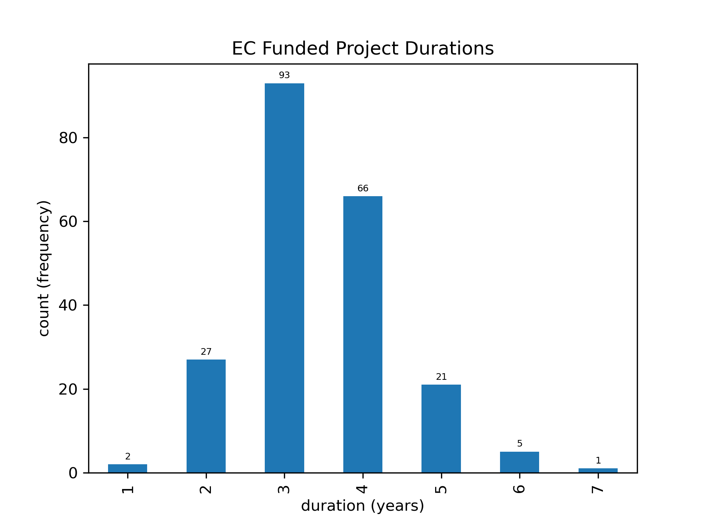
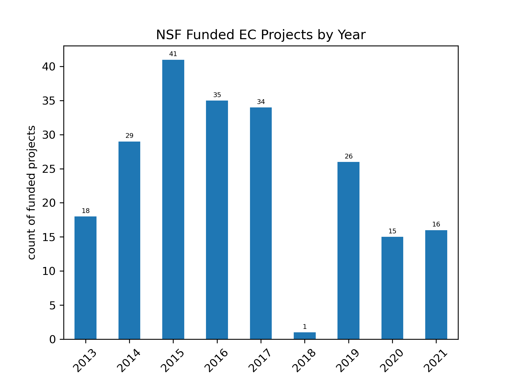

Project-Oriented Outcomes
Contents
Project-Oriented Outcomes#
Top 10 projects sorted by number of publications give insight into how project-level outcomes compare. This gives us a view into the relative publication outputs of funded projects and says nothing of non-publication outputs (software, data, posters, workshops, etc.).
In general, collaborative projects of two or more collaborators produced more citations (regardless of total papers produced). However, and as is the nearly always the case, predictors of high citation counts are independent of the number of papers – projects that produce highly cited papers do not produce more papers and visa versa. Interestingly, the second highest citation producing project had only no additional collaborators (GRISO NSF #1541390).
Highlights#
Project Highlights
four projects produced at least 10 peer-reviewed publications
The ITEST (NSF #1541039) project produced over 541 citations in 6 publications
the average publications per year of project funding (for projects expiring by 2020) was : 1.07
Tables#
Project-Publication Counts#
TOP 5 AWARDED PROECTS BY PUBLICATION COUNTS
project/publication counts:
[csv (download)]
Award Title |
Start Date |
End Date |
Publication Count |
|---|---|---|---|
Earthcube Building Blocks: Collaborative Proposal: Geosoft: Collaborative Open Source Software Sharing For Geosciences (NSF #1440323, NSF #1440291, NSF #1440332) |
2014-09-01 |
2018-08-31 |
19 |
Earthcube Building Blocks: Cyberconnector: Bridging The Earth Observations And Earth Science Modeling For Supporting Model Validation, Verification, And Inter-Comparison (NSF #1440294) |
2014-09-01 |
2017-08-31 |
13 |
Earthcube Ia: Collaborative Proposal: Optimal Data Layout For Scalable Geophysical Analysis In A Data-Intensive Environment (NSF #1541043, NSF #1540542) |
2015-09-01 |
2019-08-31 |
11 |
Earthcube Data Capabilities: Machine Learning Enhanced Cyberinfrastructure For Understanding And Predicting The Onset Of Solar Eruptions (NSF #1927578) |
2019-09-01 |
2023-08-31 |
10 |
Earthcube Data Infrastructure: Collaborative Proposal: A Unified Experimental-Natural Digital Data System For Analysis Of Rock Microstructures (NSF #1639749, NSF #1639710, NSF #1639716, NSF #1639738, NSF #1639748) |
2017-09-01 |
2021-08-31 |
9 |
TOP 5 AWARDED PROECTS BY TOTAL CITATIONS
Award Title |
Start Date |
End Date |
Total Citations |
|---|---|---|---|
Earthcube Ia: Collaborative Proposal: Earthcube Integration & Test Environment (NSF #1541039, NSF #1540998, NSF #1541049) |
2015-09-01 |
2018-08-31 |
541 |
Earthcube Rcn: Collaborative Research: Engaging The Greenland Ice Sheet Ocean (Griso) Science Network (NSF #1541390) |
2016-08-01 |
2018-07-31 |
391 |
Collaborative Proposal: Earthcube Building Blocks: Planet Microbe: Enabling The Discovery And Integration Of Oceanographic Omics, Environmental And Physiochemical Data Layers (NSF #1639588, NSF #1639614) |
2017-09-01 |
2020-08-31 |
304 |
Earthcube Building Blocks: Collaborative Proposal: Geosoft: Collaborative Open Source Software Sharing For Geosciences (NSF #1440323, NSF #1440291, NSF #1440332) |
2014-09-01 |
2018-08-31 |
267 |
Earthcube Ia: Collaborative Proposal: Building Interoperable Cyberinfrastructure (Ci) At The Interface Between Paleogeoinformatics And Bioinformatics (NSF #1540979, NSF #1541002) |
2015-09-01 |
2019-08-31 |
244 |
Charts and Graphs#
charts or graphs have yet to be produced for this data

charts or graphs have yet to be produced for this data

Interpretation#
The largest group of EC projects were funded between 2014-2017. Funding was largely paused in 2018, and resumed from 2019-2021 though at a lower rate in terms of numbers of projects.
The trajectory of publications produced generally follows the trajectory of awards given, but with an expected lag of a few years for accumulation. The initial year of any given award likely resulted in few publications. Publications seem to have been mostly generated in years 2-4 after projects were funded, given the duration of projects shown in the figures above.
The dip in awards funded in 2018 was followed by a dip in publications in subsequent years, but the effect of this is likely not exhibited strongly until 2021, which would have been year 3 of any 2018 awards. The reduction in publication numbers for 2019 and 2020 is probably also strongly related to the completion of projects funded in 2014 and 2015.
2022 data (10 publications) represent less than half the year (Jan-May), so may match or exceed the 2021 count (23) by the end of the year.